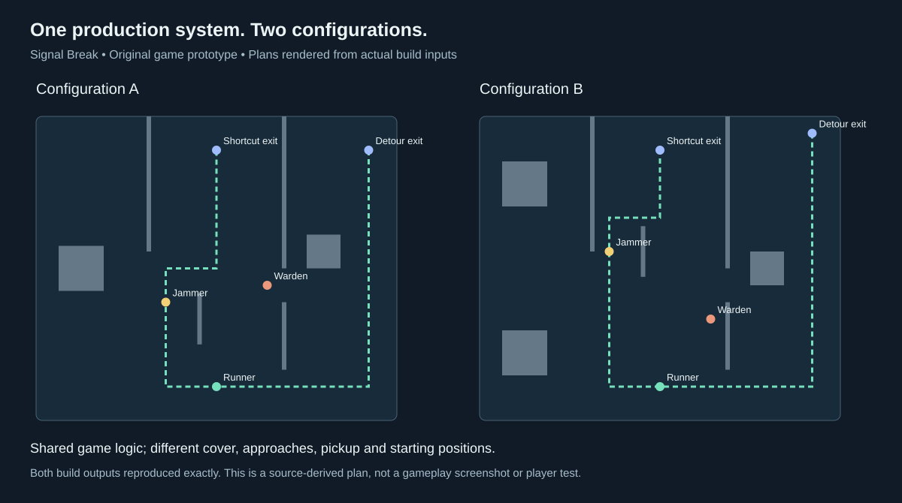

Dylan
Becchetti
Mechanical engineering. Manufacturing. Software.
I built the scorecard my coworkers looked at every day, modeled the gears you can turn here, and started a futures research system that I still work on in my own time.
Lehigh B.S. expected January 2027

Ring turnsPlanets spinSigns orbit
About me
I came up with Formsby during breaks and lunches at Cardinal Glass.
At work, I liked taking information that was scattered across files and putting it in front of the people who needed it. Outside work, I kept thinking about a similar problem. If someone had already posted what they needed, could a system find a useful answer somewhere else? That’s the idea behind Formsby.
Midas is where I spend much of my own build time now. I keep finding things a backtest leaves out, then figuring out how to model them. I’m also building Operalith around a simple preference of mine. When I open a task, I want to be able to get to the project and the supplies it depends on.
I’m finishing mechanical engineering at Lehigh with a minor in Materials Science and Engineering.
Three summer internships · 2023–2025
Cardinal Glass
I built the scorecard my coworkers looked at in the end-of-day meeting. The people working the line already had the information they needed, but it lived in separate files. I wanted the team to be able to sit down together and see what had happened.
One place to review the day
For an R&D production line, I built a daily Excel/VBA tracker and developed the connected weekly operations scorecard. The scorecard pulled from inspection records, end-of-day production, a separate yield workbook and work orders.
Quality reporting had meant filtering a log of more than 10,000 unit records by date-coded ID and copying the counts. I automated the weekly defect counts and report navigation. I also worked through meters that rolled over, downtime that could be counted twice, and missing measurements that needed to stay blank.
- Inspected
- 42
- Failed
- 12
- Primary particle defects
- 6
- Inspection logCount defects by reporting week.
- Production reportTrack time, output and downtime.
- Yield workbookAggregate yields for the selected dates.
- Work ordersUpdate delivery risk for the active week.
- 2023
Engineering
Rotated through maintenance, quality and R&D. Inspected units, analyzed data in Minitab, drafted equipment layouts in AutoCAD and contributed to design failure mode reviews.
- 2024
Continuous improvement
Wrote illustrated build instructions for customer samples, planned spare-parts organization and signage across 14 warehouse locations, and measured cleanroom airflow with a capture hood and micromanometer.
- 2025
Continuous improvement
Built Excel/VBA reporting for the R&D line and worked with engineers and operators to bring daily production data into the shift debrief.


The figures use fictional records. The interactive demo reconstructs the weekly reporting system, which is documented in more detail than the daily debrief tracker.
Wilbur Powerhouse
I did much of the mechanical design and built all of the parametric OpenSCAD models for our year-long Lehigh capstone. My team and I are fabricating a kinetic sculpture designed to hang above a classroom at Lehigh’s Wilbur Powerhouse. I used a 1:1 assembly model to design the parts we’ll build.
- Outer ring diameter
- 79.5 in
- Drive reduction after the ring revision
- 10:1
- Project
- Two semesters
When we took the original concept to full scale, the problems changed. I revised the assembly through sponsor reviews, replacing a plywood carrier concept with welded steel arms and cable stays. To fit the rolling supports, I widened the plywood ring from 1,880 to 2,020 mm. I kept the inner teeth that mesh with the planet gears, staggered the plywood seams, and moved the motor mount 70 mm to keep the drive engaged.
My team and I CNC-cut a full-size plywood planet gear and completed the first welded gear unit. The real sleeve measured about 1.02 inches across, so the first gear needed sanding and the next cut needed more bore clearance. That was a fit check on a physical part while the rest of the assembly was still in fabrication.


Adding cable stays reduced predicted movement at the planet support and shifted more load to the center bearing. I used the earlier study to inform the carrier design. The later caster geometry and installed assembly require their own checks.
Midas Futures
I wanted to know what happens after a backtest looks good. Can the same rules make the same decisions in replay and forward evaluation? Can those trades survive costs and a funded account’s rules?
I started Midas as an equities scheduler and rebuilt it around futures. I’ve spent the past year directing its development, from a Raspberry Pi execution setup to Python strategy modules, cloud research batches, account simulation and a dashboard for reviewing results.
One of the hardest problems was getting historical replay and forward evaluation to agree on when a bar had closed and which price an exit could use. I unified the rules in a shared state machine. A retained check matched 228 session decisions and 225 modeled trade lifecycles against a frozen reference.
- Define the strategy. I freeze the signal, exit and risk rules along with the code, data, costs and time windows. Each run carries those identities so I can trace a result back to the exact experiment.
- Replay and compare. A simulated clock drives replay. Batches record which variants finished. The runner checks case IDs and input fingerprints before it combines results or skips completed cases on resume.
- Model the account. Strategies share one account’s risk limits. The simulator follows evaluation and funded stages and accounts for fees, resets and payouts. I can see when winning trades still leave the account down.
- Review the evidence. I change one part of the system and compare it with saved controls. Cost stress and Monte Carlo tests help determine whether an apparent improvement deserves further research.
- Practice approval. Replay rejects broker orders. A separate Practice runtime checks authorization and records decisions, orders and fills so I can reconcile them with the model.

A payout can still leave an account down
In a November cloud study, I evaluated 108 new account paths and preserved all 216 prior comparison rows. One new path recorded a modeled payout. All 108 finished the observed window with negative modeled cash, so the candidate stayed in research.
The dashboard keeps research results, Practice fills and actual cash separate. The simulations cover finite historical windows.
What happens when a research request comes in twice?
I built a Mac queue to run a defined campaign unattended. It claims a request by its identity, verifies the inputs and records the result. A separate cloud run verified and skipped the first 12 finished cases before resuming the rest.
| Request | What Midas did |
|---|---|
| First delivery | Ran 288 variants at two cost settings and recorded eight batches. |
| Duplicate delivery | Reused the completed result. |
| Malformed request | Rejected it before creating a run. |
Historical backtest and comparison runs
Historical backtest
+$7,586
Modeled net P&L across 365 signals and 374 dates, June 2024–December 2025. The comparison used one micro Nasdaq futures contract, a fixed 58-minute hold and $7.24 in modeled round-trip costs. The strategy’s modeled max drawdown was $2,089.
| Same dates and cost model | Net P&L |
|---|---|
| Strategy direction | +$7,586 |
| Always long | −$2,311 |
| Always short | −$2,974 |
Cumulative modeled net P&L by month
- Strategy direction
- Always long
- Always short

Scanned Leverage and Optimized Production
I wanted to see if I could study what players respond to, turn those observations into reusable mechanics, and build original games from them. Roblox gives me a market to test a larger idea about how research can feed production.
The research side brings together game rankings, descriptions and recorded gameplay. I built the processing around exact game identities and source records, so an observed interaction can be traced back to its evidence. It turns annotated gameplay into sequences of actions, state changes and rewards, while keeping unobserved behavior separate. I use that record to decide what might make a good experiment, then test the idea in an original design.
The production side is Python and Luau. Configurations control world layout and interaction rules; shared components provide the game logic and interface. In one original prototype, Signal Break, two players face a choice between a longer open route and a contested shortcut. The build system produces two versions with different cover, starting positions and pickup locations from the same runtime. Checks reject invalid settings and blocked routes before a place is generated.


The research can also tell me to stop. I held a separate collector concept at storyboard review because the second trip repeated too much of the first. The same structure could take feedback on a different product, record the behavior worth investigating, and build test versions from shared components. Player testing is the next step for Signal Break.
Operalith
I started Operalith because a task is rarely just a task. It can be part of a project, depend on supplies and start with a customer enquiry. I wanted someone to choose the tools they need and still be able to follow those connections.

I built a catalogue for choosing tools and adding compatible features. Records stay connected as the workspace changes. For example, a project can link to the original enquiry and the supplies it needs. The public demo keeps sample work in your browser. A separate, invited solo pilot saves fictional records to an account.
I designed account saves to prevent duplicate writes and stop an older browser tab from overwriting newer work. In a hosted test, an edit survived reload and undo restored the previous value while keeping all 11 prior history entries.
Try the connected workspace →Formsby
Someone’s request on one site might have an answer on another. I started Formsby to build one system that could understand the need, find a relevant person or resource, and help make the connection. Housing was my first test of that idea.
Inside the housing application
- 01Save the requestKeep the signed-in user, original form and search settings together.
- 02Interpret the needSeparate budget, location, timing, must-haves and preferences.
- 03Search across sourcesRun source adapters, merge duplicate URLs and record connector failures.
- 04Evaluate each candidateSave the source evidence, score, explanation and search-run identity.
- 05Return the latest resultsKeep private results tied to their run, with separate partial and failed states.
I spent months working through the product and its Python prototype. I separated discovery, interpretation, matching and communication so new categories could share the same core. I built city and category lookups, persistent lead IDs and parent-linked match IDs. When a source returned HTML but no records, I traced the problem to outdated selectors and restored full-text extraction in a five-result test.
The harder problem was deciding what counted as a useful match. A directory link or a plausible description wasn’t enough. I wanted a specific option with enough source information for someone to act on. That requirement led me toward fetching and evaluating individual offers, keeping the original request attached, and recording why a candidate was selected.
In the later housing build, I implemented signed-in intake, background job dispatch, source adapters, duplicate removal, ranked results and payment handling. Requests, runs, listings and evaluations have separate records. If one connector fails, the run can retain the other results and show a partial status. The dashboard returns the latest run’s results for the signed-in user.
A design decision beyond the housing prototype. For the original paid-introduction concept, I designed a flow that prepared a match packet before checkout and tied it to a persistent ID. Payment would retrieve the saved packet instead of repeating the search and producing a different answer. The Python prototype included file-based unlock logic. Completing that delivery flow, expanding categories and adding private conversations are part of the broader product I want to build.
Walk through a search with a duplicate and a failed source
Fictional example of the code paths. A renter asks for a one-bedroom under $1,500 that allows cats. Two sources return the same listing URL, and a third source times out. The job keeps one copy of the listing, evaluates it against the request and records the failed source.
The run can return the candidate with a partial status. The dashboard reads results from that run for the signed-in renter, so an older listing from a previous run does not reappear as a new result. The example illustrates the behavior of the code and does not use live listings.
Housing prototype · Last code update March 2026 · Python, Next.js, PostgreSQL, Prisma, Inngest and Stripe
Résumé & contact
I’m finishing my Mechanical Engineering B.S. and Materials Science and Engineering minor at Lehigh. I expect to complete coursework in December 2026 and receive my degree in January 2027. I’m interested in full-time, U.S. remote engineering work.